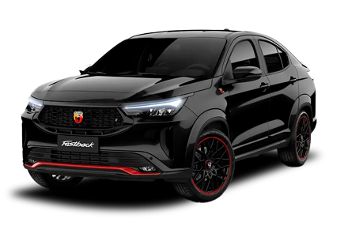

FASTBACK
O Abarth Fastback marca a entrada da Abarth no segmento de SUVs cupê, unindo a tradicional performance esportiva da marca italiana com um design moderno e versátil.

HISTÓRIA
O Abarth Fastback representa um marco na história da marca do escorpião, pois marca a primeira vez que a Abarth aplica sua filosofia de alta performance a um SUV cupê. Nascido da base do Fiat Fastback, este modelo foi meticulosamente retrabalhado pelos engenheiros da Abarth para incorporar o DNA esportivo da marca: o motor recebeu um ajuste para maior potência, a suspensão foi recalibrada para uma dirigibilidade mais dinâmica, e o design exterior e interior foi aprimorado com elementos que remetem ao automobilismo.
Assim, o Abarth Fastback não é apenas uma versão esportiva de um carro existente, mas sim uma fusão da praticidade e do estilo de um SUV moderno com a emoção e a performance que só um verdadeiro Abarth pode oferecer, abrindo um novo capítulo para a história da marca no mercado global.
O Abarth Fastback é impulsionado pelo motor Turbo 270 (1.3 turbo flex), que entrega 180 cv com gasolina e 185 cv com etanol, além de um torque de 270 Nm (27,5 kgfm).
Esse conjunto mecânico, combinado com uma transmissão automática de seis marchas e calibrações específicas da Abarth, permite que o SUV cupê acelere de 0 a 100 km/h em apenas 7,6 segundos (com etanol).
Sua fabricação ocorre na planta da Stellantis em Betim, Minas Gerais, Brasil, reforçando a estratégia da Abarth em desenvolver produtos focados no mercado sul-americano.
FICHA TECNICA
Modelo: Abarth Fastback
Ano: 2023
Motor: 1.3 turbo flex
Potência: 185 cv (E)
Torque: 27,5 kgfm
0–100 km/h: 7,6 s
Vel. Máx: 220 km/h
Peso: 1.330 kg
Tração: Dianteira
Câmbio: Automático 6 marchas
Dimensões (C×L×A): 4.427×1.774×1.545 mm
CURIOSIDADE
Uma curiosidade marcante sobre o Abarth Fastback é que ele representa a primeira incursão da Abarth no segmento de SUVs cupê. Tradicionalmente, a marca do escorpião sempre focou em modelos mais compactos e hatches esportivos, como o icônico Fiat 500 Abarth. Com o Fastback, a Abarth expandiu sua filosofia de performance e dirigibilidade a um tipo de carroceria que combina a robustez de um SUV com a elegância e a esportividade de um cupê, marcando uma nova era para a marca e para os entusiastas da alta performance no Brasil e na América Latina.
GALERIA
Imagens do FastBack
Canal: Carro Chefe